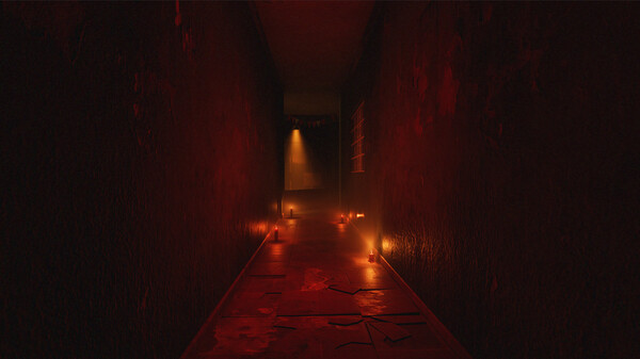
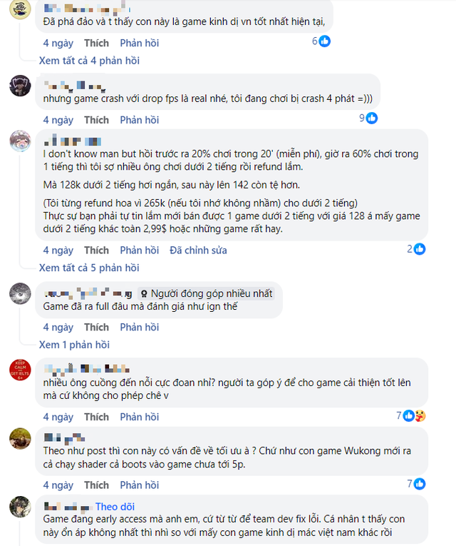

Game kinh dị "made in Việt Nam" mới ra mắt trên Steam nhận ý kiến trái chiều, người chơi khen chê lẫn lộn
Tai Ương - tựa game kinh dị mới ra mắt trên Steam hiện đang nhận phải không ít ý kiến trái chiều.
Tựa game đang được nhắc tới trong câu chuyện là Tai Ương, hay còn có tên gọi tiếng Anh là The Scourge - một game kinh dị nhập vai có yếu tố giải đố.
Tai Ương là game kinh dị do chính người Việt sản xuất và bản thân trò chơi cũng lấy bối cảnh cực kỳ thuần Việt trong một khu căn hộ cũ kỹ với từ những năm 90 với nhân vật chính là Huy - người đang bị ám ảnh bởi những thế lực ma quái trong căn chung cư và chính gia đình của mình.

Là sản phẩm tới từ hai studio trẻ đầy tiềm năng Rare Reversee Gaming cùng Beaztek Studio, Tai Ương nhanh chóng nhận được rất nhiều sự ủng hộ của các game thủ Việt, đặc biệt là sau khi trò chơi xuất hiện trên Steam.
Trò chơi cũng nhận về những đánh giá tích cực chỉ sau thời gian ngắn ra mắt dù mới chỉ dưới dạng Early Access nhưng đã nhanh chóng leo lên TOP 1 Chart Early Access (Steam) tại Trung Quốc cùng một số lời khen dành cho phần đồ họa ấn tượng cũng như cốt truyện thu hút của nó. Dẫu vậy, Tai Ương cũng đang nhận phải một số đánh giá trái chiều từ phía chính các game thủ Việt.
Cụ thể, có không ít ý kiến cho rằng trò chơi vẫn còn tồn đọng một số vấn đề như game hay bị lỗi, crash. Mọi thứ chưa được tối ưu một cách tốt nhất khi FPS thường xuyên chứng kiến tình trạng sụt giảm thất thường, chuyển động của người chơi và các đoạn sub của hội thoại cũng có phần delay. Nhìn chung, Tai Ương vẫn chưa thật sự quá hoàn thiện trong suy nghĩ của một số game thủ. Ngoài ra, thời lượng nội dung có phần hơi ngắn ngủi của trò chơi cũng để lại một số dấu hỏi. Nhưng ngược lại, những lời góp ý này cũng đang nhận phải một số chỉ trích, đánh giá trái chiều từ các người chơi khác.
Tất nhiên, thật khó để Tai Ương có thể hoàn hảo một cách tuyệt đối khi trò chơi vẫn đang trong giai đoạn Early Access. Dẫu vậy, những lời góp ý mang tính xây dựng vẫn sẽ là động lực cũng như cơ sở để đội ngũ phát triển có thể hoàn thiện tựa game này khi chính thức ra mắt phiên bản đầy đủ.